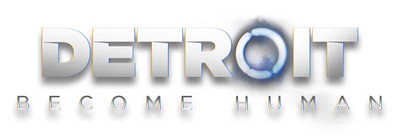

Detroit: Become Human é um jogo eletrônico produzido pela Quantic Dream e publicado pela Sony Interactive Entertainment para o PlayStation 4 e Microsoft Windows PC. A história gira em torno de Kara, Markus e Connor, três androides concebidos pela empresa fictícia CyberLife que, consoante as decisões que o tomar, mudarão o rumo da cidade de Detroit e, consequentemente, dos Estados Unidos da América. Além disso, será testemunhado o surgimento de uma nova raça: Os Divergentes (androides que manifestam emoções humanas).
Detroit: Become Human é baseado na demonstração tecnológica de 2012 da Quantic Dream Kara, que também estrelou Curry. Para pesquisar o cenário, os desenvolvedores visitaram Detroit, Michigan. O roteiro levou mais de dois anos para ser concluído pelo escritor e diretor David Cage. Eles construíram um novo mecanismo para complementar o jogo e escalar centenas de atores antes de iniciar o processo de filmagem e animação. Philip Sheppard, Nima Fakhrara e John Paesano serviram como compositores para Kara, Connor e Markus, respectivamente. Foi lançado para o PlayStation 4 em maio de 2018 e o Microsoft Windows em dezembro de 2019.
Detroit: Become Human recebeu críticas geralmente favoráveis dos críticos, que elogiaram o cenário, os visuais, os momentos menores da história, os personagens principais, seus dubladores, as escolhas de impacto que tiveram na narrativa e o recurso do fluxograma, mas criticaram os controles de movimento, manuseio incorreto de alegorias históricas e temáticas e aspectos do enredo e personagens. O jogo é o lançamento de maior sucesso da Quantic Dream, com vendas superiores a 3 milhões.
Detroit: Become Human se passa obviamente em Detroit, no ano de 2038, época em que a inteligência artificial está tão evoluída que os androides fabricados pela CyberLife dividem espaço com seres humanos nas mais variadas atividades: há quem tenha um androide em casa para serviço doméstico, há androides trabalhando com segurança e construção civil. Também há androides detetives ajudando a polícia; e há até bordéis, onde clientes podem “alugar” androides para fins sexuais.
Claro que esta evolução chega acompanhada de alguns efeitos colaterais: o aumento da “mão de obra barata” dos androides no mercado de trabalho faz disparar o número de humanos desempregados, que, insatisfeitos, fazem de tudo para boicotar seus rivais.
A situação fica ainda mais complicada quando alguns androides começam a se tornar conscientes e emular emoções humanas. A linha entre androides e humanos se torna cada vez mais tênue quando androides começam a se portar como humanos, criando laços afetivos, sentindo, raiva, medo, alegria, paixão… enfim, eles apresentam sentimentos e emoções que não deveriam.
Estes androides “rebeldes” logo ganham um apelido: divergentes. Conforme estes divergentes vão se tornando mais agressivos e passionais em suas reações, crimes começam a acontecer, e quando as famosas Leis da Robótica são quebradas, as relações entre homens e máquinas são colocadas em xeque.
Neste complexo panorama, somos apresentados a 3 androides: Kara, é uma jovem androide modelo AX 400 encarregada de serviços domésticos, que acaba testemunhando casos de violência doméstica. Markus é um modelo RK 200 que serve de enfermeiro e amigo para um artista idoso. E Connor, um avançado modelo RK 800, é justamente um androide detetive, encarregado de ajudar a polícia a investigar crimes cometidos por divergentes.
As “vidas” destes 3 androides irão se cruzar em uma história que, apesar de não soar assim tão original — já vimos conflitos do tipo em Blade Runner, Inteligência Artificial, Deus Ex –, é contada daquele jeito estiloso e cinematográfico que é marca registrada da Quantic Dream. E, tal qual os outros jogos da empresa, aqui suas decisões têm um peso enorme, afetando a história até os últimos minutos de jogo.
Vale ressaltar ainda que a história ganha pontos por servir como uma metáfora para problemas bem reais. Vivemos em um mundo no qual negros passaram décadas sendo escravizados, e o presidente da maior potência do planeta prometeu construir um muro para evitar a entrada de estrangeiros. Segregação, preconceito e luta por liberdade e direitos iguais são temas universais, e continuam extremamente relevantes.
Detroit Become Human é um jogo de drama interativo. Isso significa que ele tem doses de ação, mas são poucas. A maior parte do jogo é ocupada por análises do ambiente para encontrar informações e por conversas com outros personagens.
O jogador reveza entre os protagonistas de acordo com a cena. Cada capítulo tem um protagonista, indicado no começo do segmento, e ele é controlado em terceira pessoa. Em geral, cada capítulo de um personagem é uma sequência direta do anterior. As três histórias também acontecem dentro de um mesmo período de tempo. Acontecimentos na história de um deles podem ser mencionados na de outro.
Existem pequenas diferenças na jogabilidade entre os personagens, de acordo com sua história e suas habilidades. Connor tem uma mecânica especial de análise de cena de crime por ser um androide detetive. Kara com frequência anda de mãos dadas com Alice. Já Markus é o personagem com mais ação, incluindo conflitos armados e fugas.


A quantidade de escolhas depende do contexto. Nem todas as opções de resposta estão disponíveis de primeira. Pode ser necessário explorar e encontrar uma determinada pista para ser capaz de dar o argumento certo em uma discussão. Ou ainda você pode fazer perguntas e conhecer melhor o personagem para então liberar opções de diálogo mais persuasivas.
O jogo Detroit Become Human tem escolhas o tempo todo. Algumas influenciam menos e servem apenas para o jogador sentir que está no controle da história. Já outras têm impacto maior. Em geral, as mais importantes aparecem no final, e uma decisão em uma história pode afetar até o destino de personagens em outra.
Os relacionamentos importam muito em Detroit Become Human. As respostas que o jogador dá podem definir ser um personagem é amigável ou não em relação a Connor, Kara e Markus. Desenvolver uma relação positiva com personagens-chave, principalmente companheiros mais frequentes, é fundamental. Afinal, isso determina o quanto eles estão dispostos a concordar ou ajudar os protagonistas em momentos de risco.
O peso das escolhas pode ser tanto uma característica positiva quanto negativa no jogo. Para começar, é uma jogabilidade que dá uma certa liberdade para o jogador fazer seu próprio jogo, até um certo ponto.
Além disso, escolher entre opções que sabe que vão influenciar e ter pouco tempo para pensar cria uma tensão. A sensação de urgência é ótima para se imergir no jogo e se sentir na pele do personagem mesmo em um jogo com três protagonistas diferentes.
No entanto, existe muita ilusão de controle e certas decisões acabam sendo esquecidas em prol de um dos finais preestabelecidos do jogo. Além disso, pode ser frustrante tentar fazer o “certo” em todas as vezes, mas acabar “arruinando” seu jogo por uma ação que não saiu como esperava.
Para casos de arrependimento, o jogo permite que o player volte e rejogue o capítulo. Mas, como decisões no começo podem voltar a aparecer no final, o trabalho de jogar tudo novamente só pelo final feliz não agrada a todos. Até porque a própria repetitividade desse estilo de jogo pode cansar se você não estiver investido na história.
Detroit Become Human é um jogo que tenta mostrar o que realmente aconteceria em uma disputa entre androides e humanos por um espaço na sociedade. Por causa disso, as chances de dar errado são maiores do que as de dar certo. Então, a dica para aproveitar a história é jogar apenas para ver o que aconteceria se você estivesse no lugar dos personagens e aceitar as consequências, sendo boas ou não.